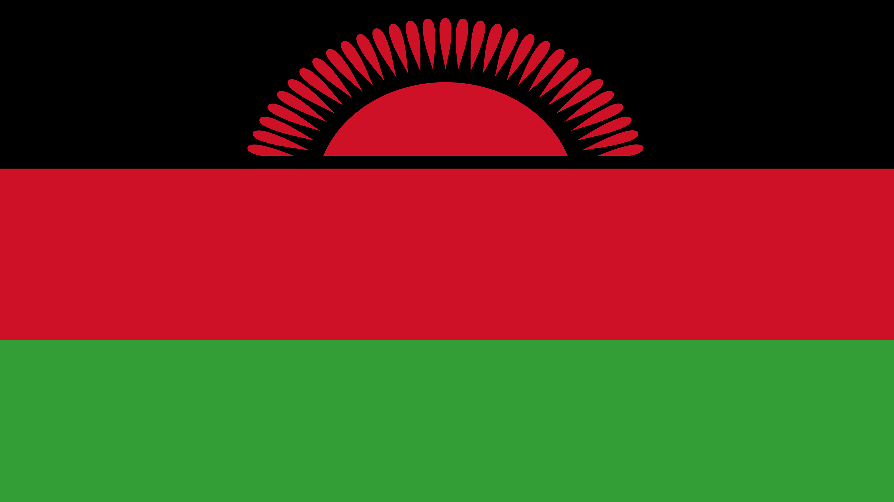

About Me
My name is Noah Mkono. I was born in Zimbabwe and currently live in Cape Town, South Africa. am a father of two children, a girl 14 and a boy 6. I have worked as a Sales Consultant for Healthbridge, a medical billing software and services company. I am passionate about football and enjoy a wide range of music genres.

Malawi, Africa
Malawi is known as the "Warm Heart of Africa" for its friendly people. It is famous for Lake Malawi, one of the world's largest freshwater lakes, which is home to diverse fish species. The country's economy is primarily based on agriculture, with tobacco, tea, and sugar as key exports.
